| Part | Content | Marks |
|---|---|---|
| Q1(a) | 25 MCQs (many use a figure, graph or table) | 25 |
| Q1(b) | Fill in the blanks | 5 |
| Q1(c) | True / False | 5 |
| Q1(d) | Match Column A with Column B | 5 |
| Sec B Q2–Q9 | Any 6 of 8 long questions (figure study, data, graphs, case studies, drawing) | 60 |
| Chapter | 2023 | 2024 | 2025 |
|---|---|---|---|
| 1 Cells & membrane transport | Q1a(i,iii,iv), Q3a, Q6a, Q8a | Q1a(i,ii), b(i), c(i), Q2a, Q3a | Q1a(i,ii,xx), d(i,ii), Q3b, Q5d, Q4b, Q6a |
| 2 Photosynthesis | Q1a(v,vi), b(ii), c(i), Q3b, Q4d, Q6e | Q1a(iii,iv), c(ii), Q2b, Q8c | Q1a(iii,xvi,xxiv), c(i), Q2e, Q5a, Q7a, Q8a |
| 3 Plant transport & hormones | Q1a(xviii), b(i), c(ii,iv), Q7d(i), Q9a,c | Q1a(v,vi,ix), b(iii,iv), Q7b | Q1a(iv,vii), b(i), Q4c |
| 4 Digestion & nutrition | Q1a(vii,viii), b(iv), Q2b, Q4a(ii), Q6d, Q8b | Q1a(vii), b(ii), Q4a,b,c,d, Q9b | Q1a(v,ix,xvii,xxiii), c(ii), Q2a, Q9a |
| 5 Blood & circulation | Q1a(ix), b(v), Q3c, Q4a(iii) | Q1a(viii), d(i,ii), Q6a,b | Q1a(vi), b(ii), Q6c, Q8b, Q9b |
| 6 Excretion (kidney) | Q1a(xii), c(v), Q5a,c | Q1a(x), d(iii–v), Q6c | Q1a(viii), b(iii), Q7b,c |
| 7 Nervous system | Q1a(x), Q4b | Q9a | Q1a(xxi), c(iii), Q9c |
| 8 Cell division & heredity | Q1a(xix–xxii), d(i,ii), Q4c, Q5e, Q7c, Q9b,e | Q1a(xv–xx), b(v), Q7a, Q8a | Q1a(xi,xii,xix,xxv), b(ii), c(v), d(v), Q2c, Q4d,e, Q5e, Q7e, Q8c, Q9d |
| 9 Evolution & biotechnology | Q1a(xxiii–xxv), d(iii–v), Q2d, Q5d, Q6c, Q7b, Q8d | Q1a(xxi–xxv), c(iv,v), Q3b, Q6d, Q8b | Q1a(xiii–xv), b(iv,v), d(iii,iv), Q2b,d, Q3d,e, Q5c, Q7d, Q8f |
| 10 Ecology, biodiversity & health | Q1a(ii,xiii–xvii), b(iii), Q2c, Q5b, Q6b, Q8c,e, Q9d | Q1a(xi–xiv), c(iii), Q5, Q6a | Q1a(x,xviii,xxii), c(iv), Q3a,c,f, Q6d,e, Q8d,e, Q9e |
| Feature | Prokaryote (bacteria) | Eukaryote (plant, animal) |
|---|---|---|
| Nucleus | No true nucleus: DNA lies free in a region called the nucleoid | True nucleus with a nuclear membrane |
| Organelles | No membrane-bound organelles (no mitochondria, ER, Golgi); only ribosomes | Many membrane-bound organelles |
| Size | Small, 1–10 µm (smaller than eukaryotic cells) P24 Q1c(i): FALSE | Larger, 10–100 µm |
| DNA | One circular chromosome + small rings (plasmids) | Several linear chromosomes |
| Cell wall | Peptidoglycan (bacteria) | Cellulose (plants); none in animals |
| Extras | Flagellum (movement), pili, capsule, mesosome | Mitochondria, chloroplast (plants) |
| Examples | E. coli, curd bacteria, H. pylori | Amoeba, yeast, plant and animal cells |
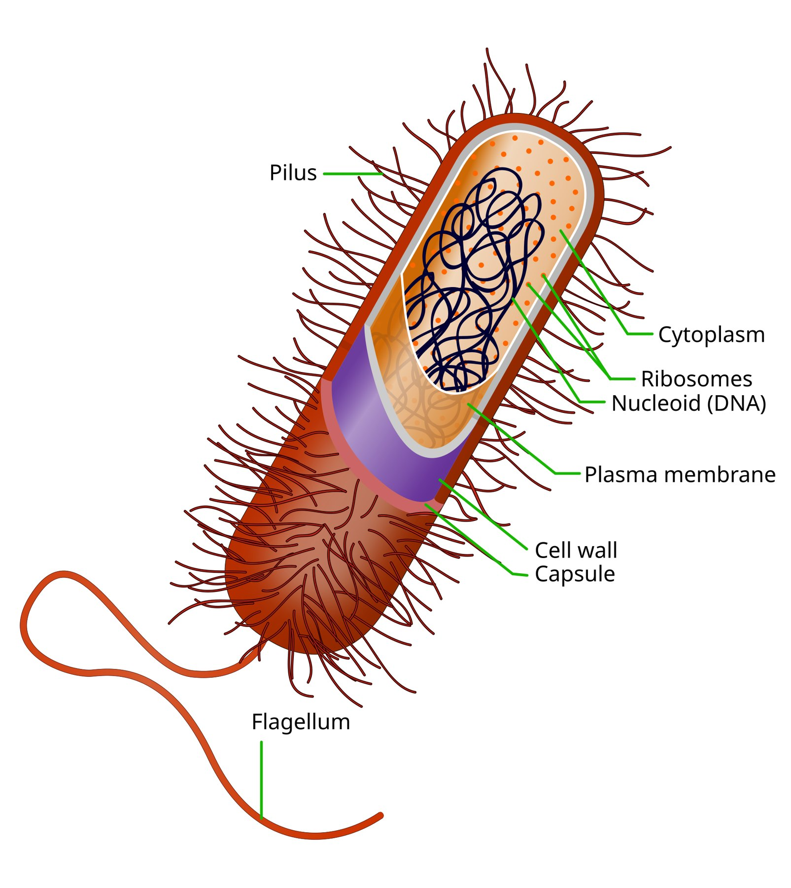
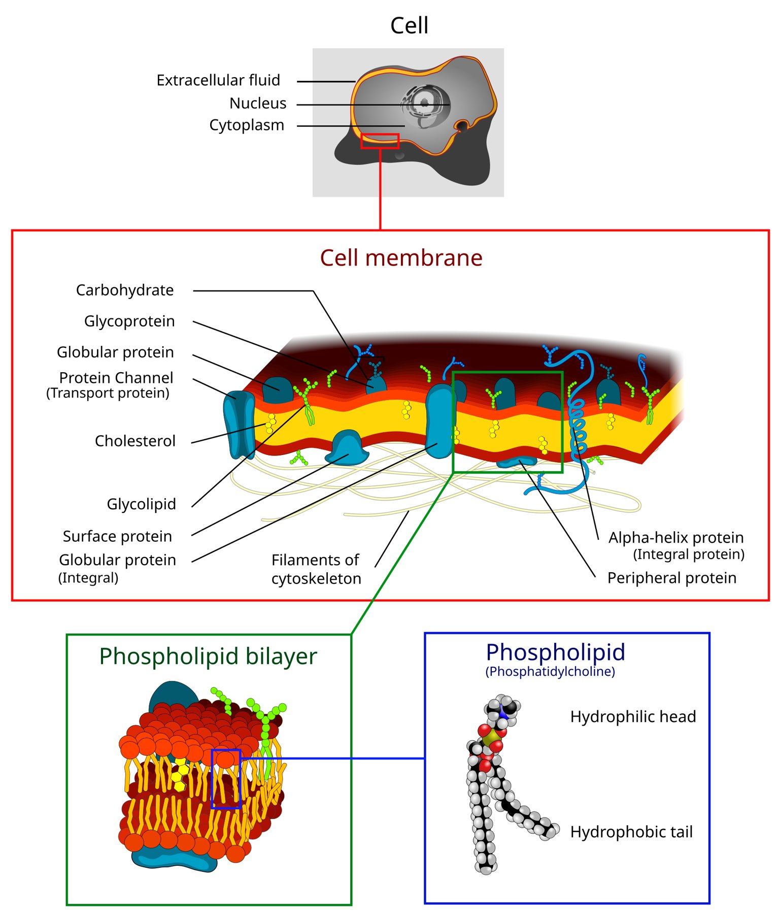
| Outside solution | Water movement | Animal cell | Plant cell |
|---|---|---|---|
| Hypotonic (more dilute than cell) | enters cell | swells, may burst | turgid (firm) |
| Isotonic (same) | no net movement | normal | normal / flaccid |
| Hypertonic (more concentrated) | leaves cell | shrinks | plasmolysed (wilts) |
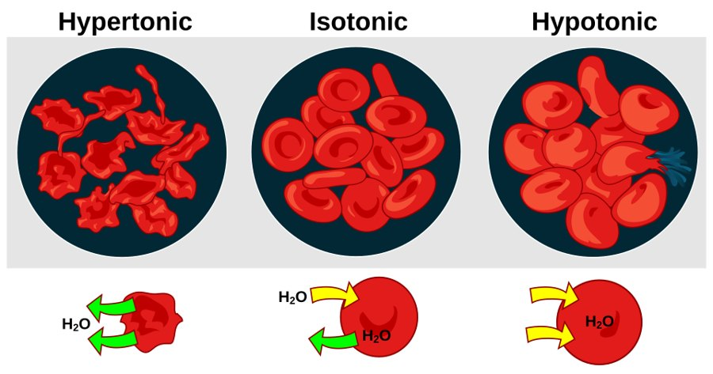
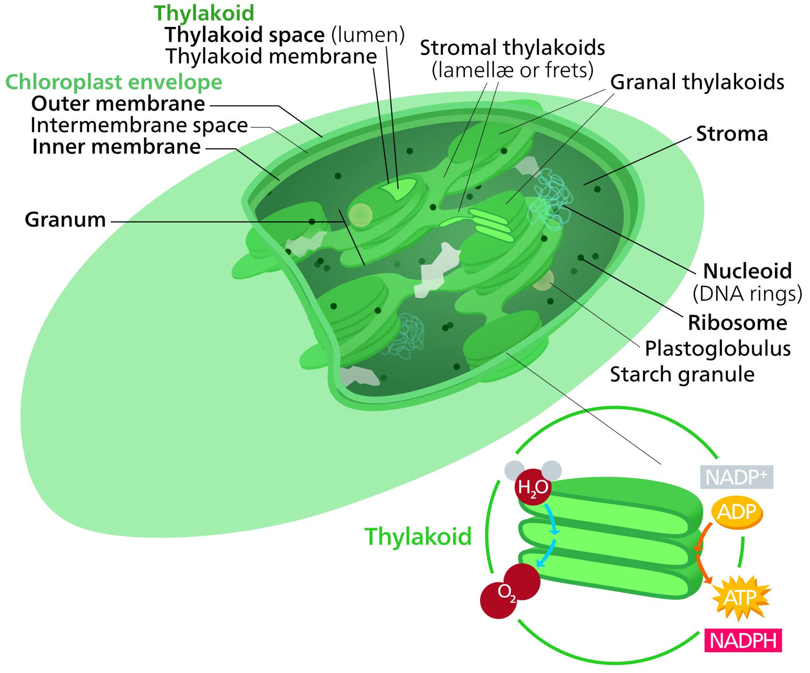
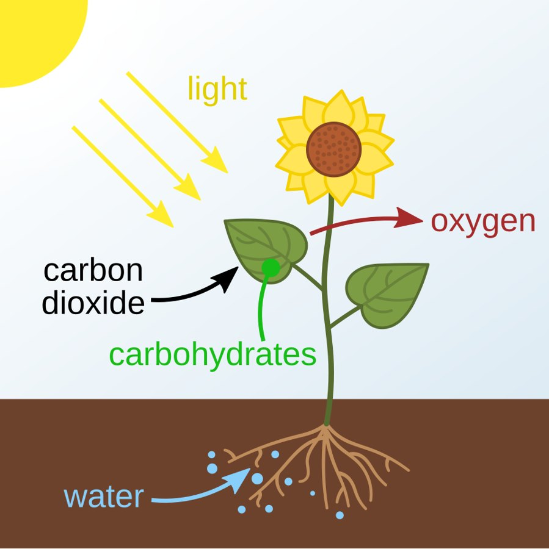
| Light reaction (1st phase) | Dark reaction / Calvin cycle (2nd phase) | |
|---|---|---|
| Where | Thylakoid membranes (grana) | Stroma |
| Needs | Light, water, chlorophyll | CO2, ATP, NADPH (enzymes) |
| What happens | Light excites chlorophyll; water is split (photolysis); ATP is formed; NADP+ is changed to NADPH | CO2 is reduced to glucose: NADPH gives hydrogen (reduces), ATP gives energy |
| Products | O2 (released), ATP, NADPH | Glucose (then starch, sucrose), ADP and NADP+ are recycled |
| Light needed? | Yes | Light independent, but it cannot continue without ATP and NADPH from the light reaction |
| Xylem | Phloem | |
|---|---|---|
| Carries | Water and minerals | Food (sucrose, amino acids) |
| Direction | Roots → leaves (upward only) | Leaves → all parts (up and down) |
| Cells | Dead, hollow, lignified | Mostly living cells |
| Parts | Vessels, tracheids, xylem fibres, xylem parenchyma | Sieve elements (tubes), companion cells, phloem fibres, phloem parenchyma |
| Energy | Passive (transpiration pull) | Needs energy (ATP) |
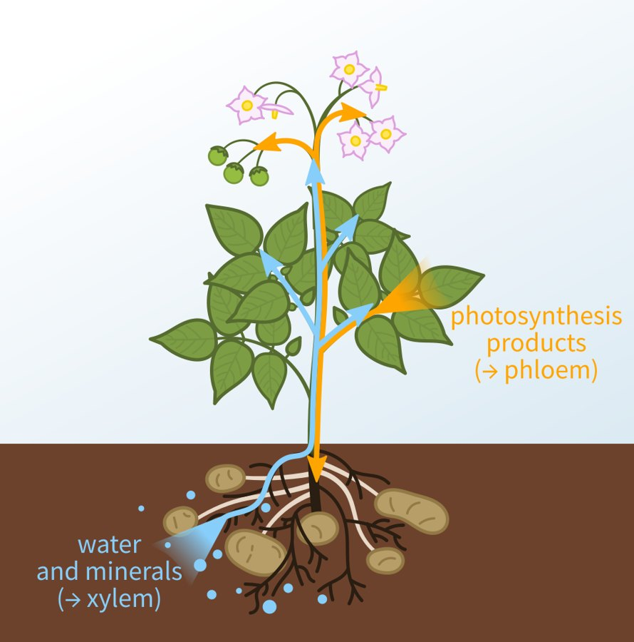
| Hormone | Functions / use |
|---|---|
| Auxin (IAA; synthetic NAA, 2,4-D) | cell elongation; root growth in cuttings; NAA stops fruit drop and prevents early sprouting of potatoes P23 Q1c(iv): TRUE; 2,4-D = weedkiller (kills broad-leaved weeds) P23 Q9a: X |
| Gibberellin | stem elongation, breaks seed dormancy / promotes germination, bigger fruits P23 Q9a: Z |
| Cytokinin | cell division, delays ageing of leaves |
| Ethylene | early ripening of fruits and vegetables P23 Q9a: Y = ethylene |
| Abscisic acid (ABA) | closes stomata, reduces transpiration in drought P25 Q1a(vii): C; seed and bud dormancy |
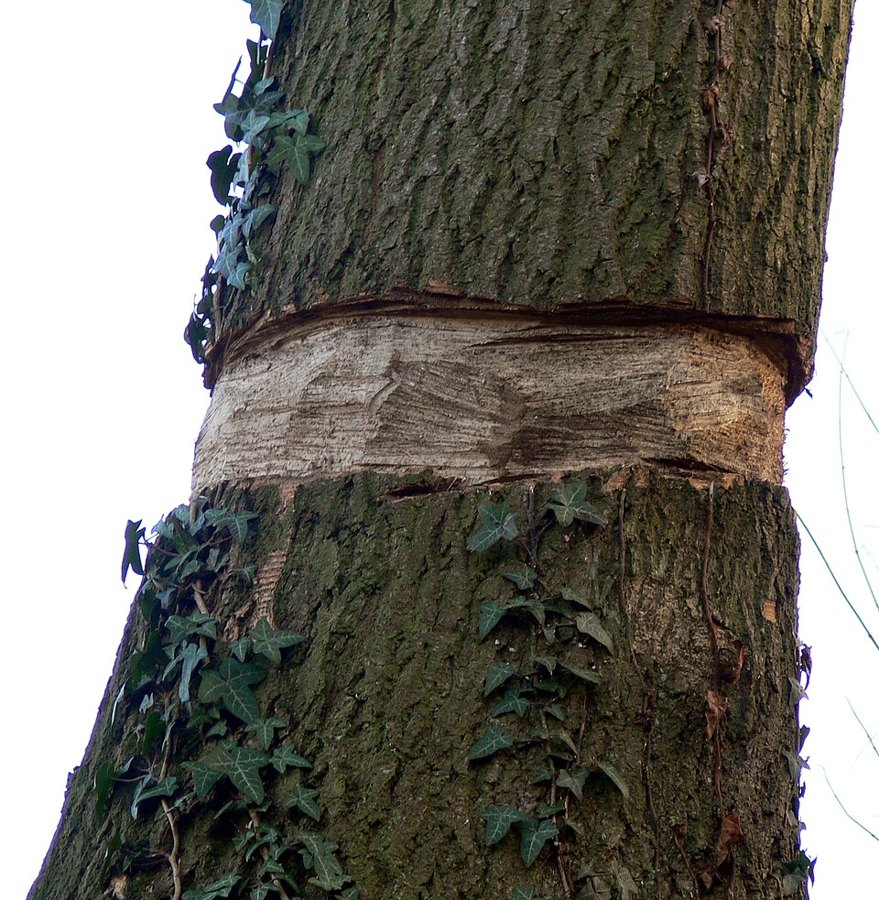
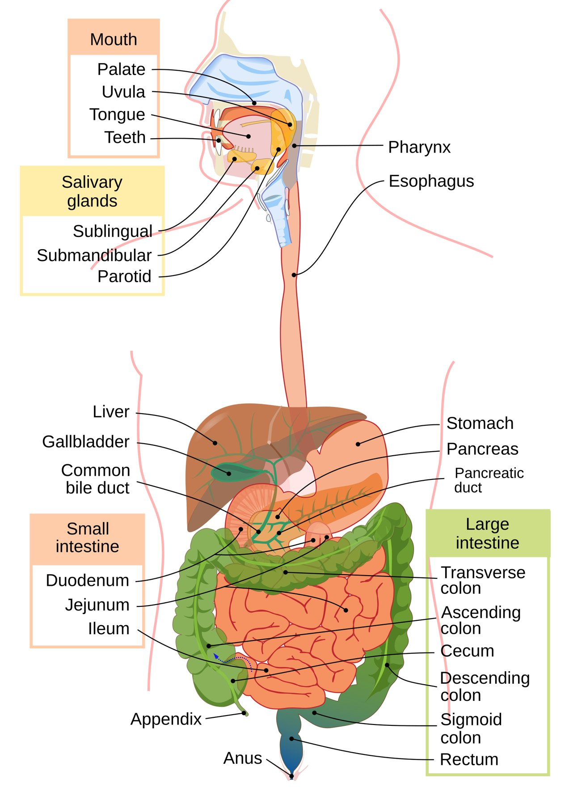
| Organ | Juice / enzyme | Action |
|---|---|---|
| Mouth | Salivary amylase | starch → maltose (only carbohydrate starts here); teeth chew; mucus lubricates |
| Oesophagus | — | peristalsis pushes food (no digestion) |
| Stomach | HCl, pepsin, mucus, gastric lipase | HCl kills germs, gives acid medium and activates pepsinogen → pepsin P23 Q1b(iv); pepsin: protein → peptides; mucus protects the stomach wall from acid and pepsin P24 Q4a(iii); gastric lipase breaks fats P23 Q4a(ii) |
| Liver / gall bladder | Bile (no enzymes) | Emulsifies fats (breaks big droplets into tiny ones: more surface for lipase) and makes the food alkaline P24 Q4a(ii) P23 Q1a(vii): bile juice |
| Pancreas | Amylase, trypsin, lipase | starch → maltose; proteins → peptides; fats → fatty acids + glycerol |
| Small intestine | Maltase, peptidases, lipase | maltose → glucose; peptides → amino acids; absorption through villi |
| Large intestine | — | absorbs water and salts; forms faeces |
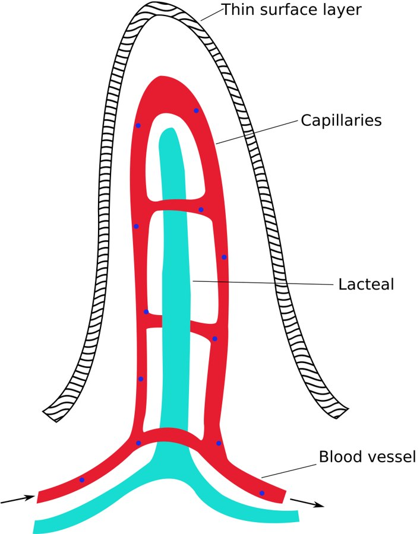
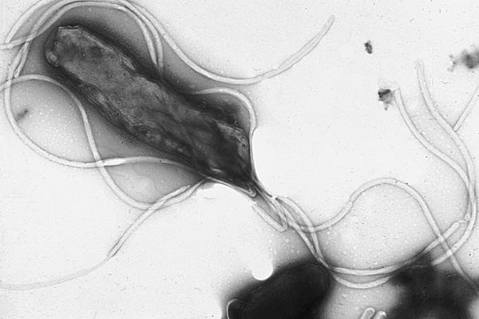
| Component | Main facts |
|---|---|
| Plasma (about 55%) | Liquid part: water, proteins, salts, glucose, hormones, wastes; carries dissolved substances P24 Q1d(i): a |
| Red blood cells (RBC, erythrocytes) | Haemoglobin carries oxygen (and some CO2) P25 Q1a(vi): C P24 Q1d(ii): c; biconcave, no nucleus → more space for haemoglobin P25 Q9b(i) |
| White blood cells (WBC, leucocytes) | Immunity: defend against germs; phagocytosis = engulfing pathogens P23 Q1a(ix): C P23 Q4a(iii); types: lymphocytes, monocytes, neutrophils, eosinophils, basophils |
| Platelets (thrombocytes) | Cell fragments that help clot the blood and stop bleeding P25 Q8b |
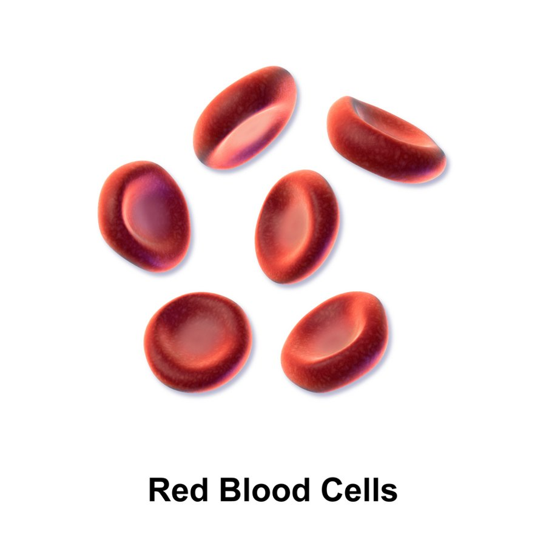
| Group | Antigen on RBC | Antibody in plasma | Can give to | Can receive from |
|---|---|---|---|---|
| A | A | anti-B | A, AB | A, O |
| B | B | anti-A | B, AB | B, O |
| AB | A and B | none | AB only | all (universal recipient) |
| O | none | anti-A and anti-B | all (universal donor) | O only |
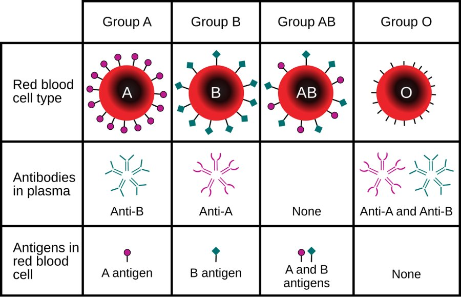
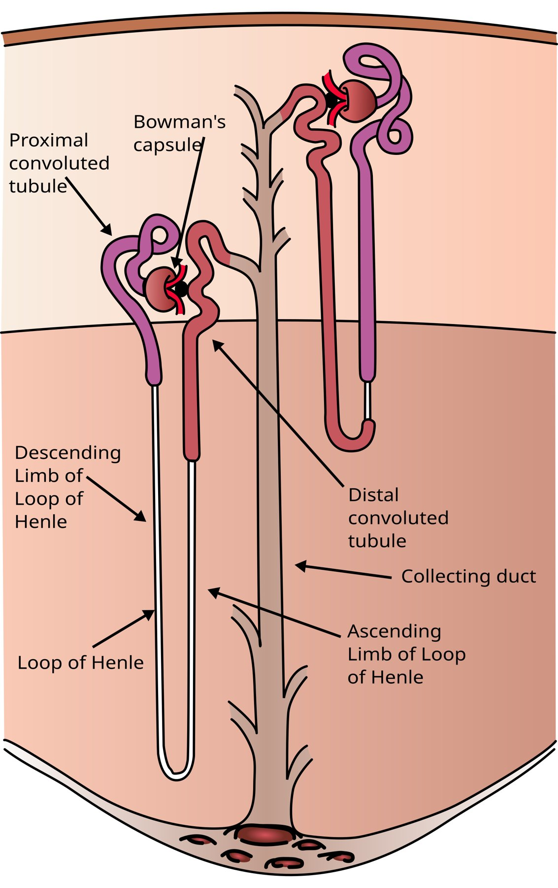
| Part | Job |
|---|---|
| Glomerulus (capillary knot) | High-pressure filtration of blood |
| Bowman’s capsule | Cup that collects the filtrate (primary urine) |
| Proximal convoluted tubule (PCT) | Reabsorbs all glucose and amino acids, most Na+ (active) and water (passive) P24 Q1d(iii): e |
| Loop of Henle | Makes a salt gradient in the kidney so water can be reabsorbed: the descending limb is permeable to water P25 Q1b(iii): descending; ascending limb takes out salts P24 Q1d(iv): f |
| Distal convoluted tubule (DCT) | Fine control: Na+ (aldosterone) and water (ADH) reabsorbed; secretion of urea, uric acid, creatinine, K+ |
| Collecting duct | Takes urine to the pelvis; water reabsorbed under ADH P24 Q1d(v): h (check — g if your text uses DCT) |
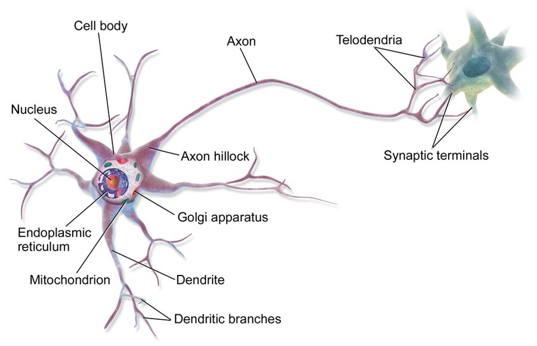
| Computer | Nervous system |
|---|---|
| Keyboard / sensors / mouse (input) | Receptors / sense organs and sensory neurons |
| CPU (processing) | Brain and spinal cord (CNS) |
| Monitor / speaker (output) | Effectors: muscles and glands (via motor neurons) |
| Hard disk (storage) | Memory stored in the brain (cerebrum) |
| Mitosis | Meiosis | |
|---|---|---|
| Cells | Somatic (body) cells | Germ cells (in testes / ovaries) |
| Divisions | One | Two (meiosis I and II) |
| Daughter cells | 2, genetically identical to the mother cell | 4, genetically different gametes |
| Chromosomes | Same number (2n → 2n) | Halved (2n → n): reduction division |
| Crossing over | No | Yes (prophase I) |
| Purpose | Growth, repair, replacement (a cut heals by dividing nearby cells P23 Q1a(xx): D; goes on in adults P23 Q9b(iii)) | Gametes (sperm, eggs); variation |
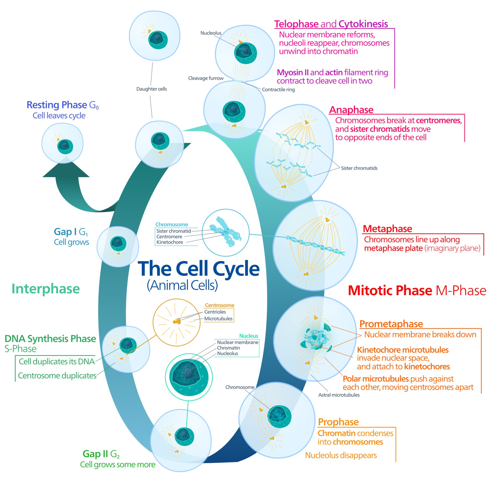
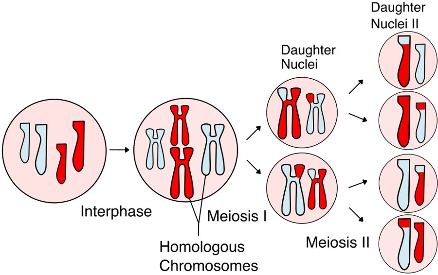
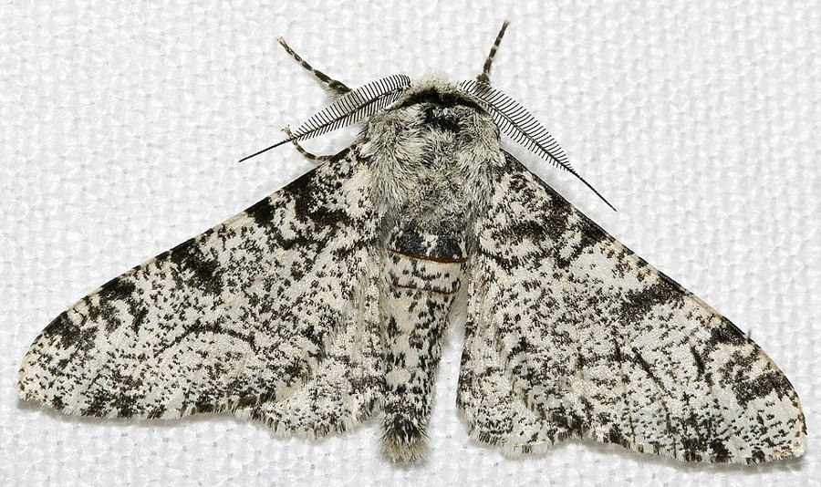
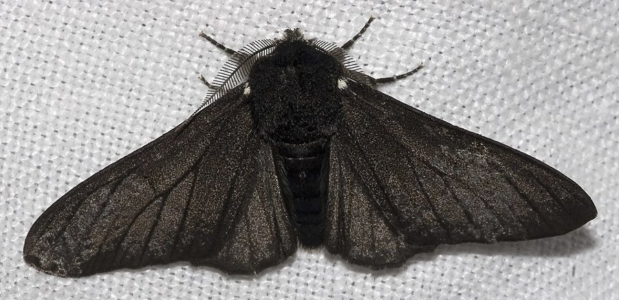
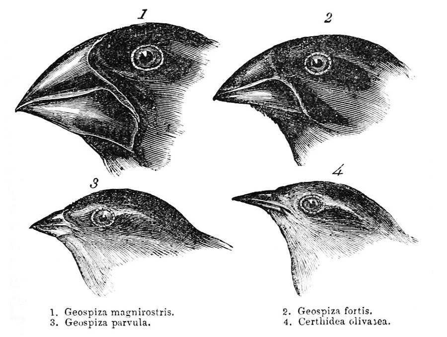
| Type of isolation | Meaning / example |
|---|---|
| Geographic | A physical barrier (island split by a storm, river, mountain) separates populations P25 Q5c: Situation B |
| Ecological (habitat) | Populations live in different habitats in the same area: lizards in different parts of a desert P25 Q5c: Situation A; squirrels in trees vs grassland P23 Q1a(xxv): B |
| Temporal | Breed at different times (seasons / hours) |
| Behavioural | Different courtship signals / calls |
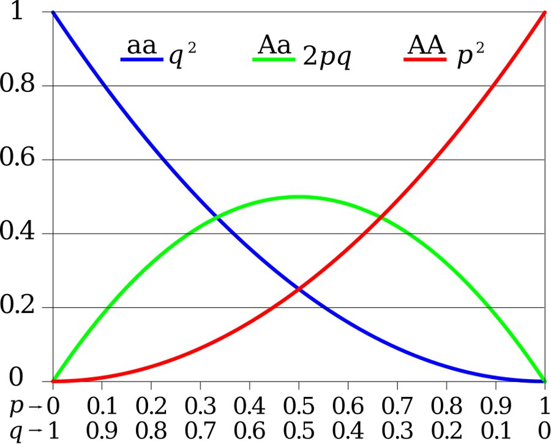
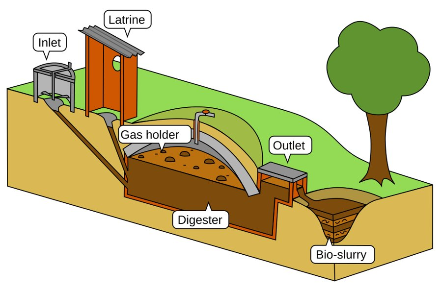
| Level | Example |
|---|---|
| Genetic diversity | different breeds of dogs; DNA variation in a population |
| Species diversity | various species of birds in a forest |
| Ecosystem diversity | forest, desert and lakes P25 Q1a(xxii): B |
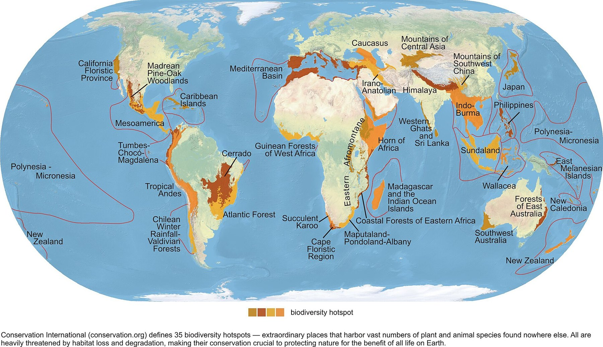
| No. | Ans | Why (short) |
|---|---|---|
| i | C | mitochondria absent in prokaryotes |
| ii | D | water from high to low solute concentration |
| iii | D | experiment has NaHCO3 (CO2), control only water |
| iv | D | phloem parenchyma stores and conducts food |
| v | B | less pancreatic enzymes: carbs, proteins, fats |
| vi | C | haemoglobin carries oxygen |
| vii | C | abscisic acid closes stomata |
| viii | C | obesity and hypertension harm kidney |
| ix | C | Helicobacter pylori |
| x | C | poaching and habitat loss |
| xi | C (check) | chromosomes with chromatids at poles: anaphase I |
| xii | B | law of dominance |
| xiii | C | black rabbits camouflaged on dark soil |
| xiv | D | introduce desirable traits and diversity |
| xv | D | gene flow = exchange of alleles |
| xvi | C | II splitting of water + IV ATP |
| xvii | B | additives cause lifestyle disease |
| xviii | C | tree (biotic) in soil (abiotic) |
| xix | D | mitosis: somatic cells, identical |
| xx | D | X dilute, Y concentrated, Z selectively permeable |
| xxi | C | receptor → sensory → inter → motor → effector |
| xxii | B | forest, desert, lakes = ecosystem diversity |
| xxiii | C | less gastric juice: protein digestion falls |
| xxiv | A | NADPH reduces CO2 to glucose |
| xxv | B | RR × rr: 100% red |
| (b) | (c) | (d) | |
|---|---|---|---|
| i | translocation | FALSE (limited by other factors) | c nucleoid |
| ii | anti-A | TRUE | a facilitated diffusion |
| iii | descending | FALSE (spinal cord first) | d bioremediation |
| iv | bottleneck | TRUE | b genetic modification |
| v | malaria | TRUE | e recessive allele |
| No. | Ans | Why (short) |
|---|---|---|
| i | B | eukaryotes have a nucleus |
| ii | D | smell of ema datsi = diffusion |
| iii | A | photosynthesis improves crop yield |
| iv | B (check) | chlorophyll content is internal |
| v | B | sieve element = oesophagus |
| vi | C | active transport of sugars in phloem |
| vii | D | chew thoroughly, eat mindfully |
| viii | B (check) | monocytes raised: infection |
| ix | D | side effects, environmental impact |
| x | D | lifestyle changes prevent kidney failure |
| xi | A | poaching is the exception |
| xii | A (check) | kitchen waste to manure = recycling |
| xiii | D | community agroforestry |
| xiv | A | autotrophs at the base |
| xv | D | 46 chromosomes, 92 chromatids |
| xvi | C (check) | anaphase: chromatids at poles |
| xvii | C | body cells: maternal + paternal |
| xviii | B | more common in males |
| xix | C | 50% of sons |
| xx | B | homozygous dominant parent |
| xxi | D | giraffe example of natural selection |
| xxii | D | fitness = survive and reproduce |
| xxiii | A | cats 1 (calm) and 3 (low shedding) |
| xxiv | A | advantageous alleles increase |
| xxv | A | q = 1 − 0.7 = 0.3 |
| (b) | (c) | (d) | |
|---|---|---|---|
| i | hypertonic | FALSE (bacteria are smaller) | a plasma |
| ii | glucose | TRUE (check) | c red blood cells |
| iii | auxin (check) | FALSE (masks still needed) | e proximal tubule |
| iv | phloem | TRUE | f loop of Henle |
| v | heterozygous | FALSE (non-random mating) | h collecting duct (check) |
| No. | Ans | Why (short) |
|---|---|---|
| i | B | has a nucleus: eukaryotic |
| ii | B | bioremediation |
| iii | B (check) | water moves from A (more water) to B (more solute) |
| iv | D | I and III |
| v | D | NADPH and ATP |
| vi | C | temperature is limiting in cold |
| vii | B | bile emulsifies oil |
| viii | A (check) | carbohydrate and lipid, no protein: mouth |
| ix | C | leucocytes: immunity |
| x | C | computers cannot decide on their own |
| xi | D | muscle growth is the aim, not a side effect |
| xii | C | glucose reabsorbed |
| xiii | B | organic matter without oxygen |
| xiv | A | hugging does not spread HIV |
| xv | C | ecosystem |
| xvi | C (check) | habitat destruction (B, C, D are all harmful) |
| xvii | D (check) | loss of biodiversity + habitats; paper copy bolds C |
| xviii | A (check) | more sugar made, more exported; paper copy bolds C |
| xix | B | crossing over: reciprocal exchange |
| xx | D | mitosis of nearby cells |
| xxi | B | normal father × diseased mother |
| xxii | C | more in males |
| xxiii | B | environment change drives evolution |
| xxiv | D | nucleic acid |
| xxv | B | ecological (habitat) isolation |
| (b) | (c) | (d) | |
|---|---|---|---|
| i | flaccid | FALSE (enzymes denature at 50 °C) | d mitosis |
| ii | photosynthesis | TRUE | c dominant allele |
| iii | biodiversity | FALSE (yeast gives CO2) | e meiosis |
| iv | HCl (hydrochloric acid) | TRUE | a selective breeding |
| v | O | TRUE | b evolution |